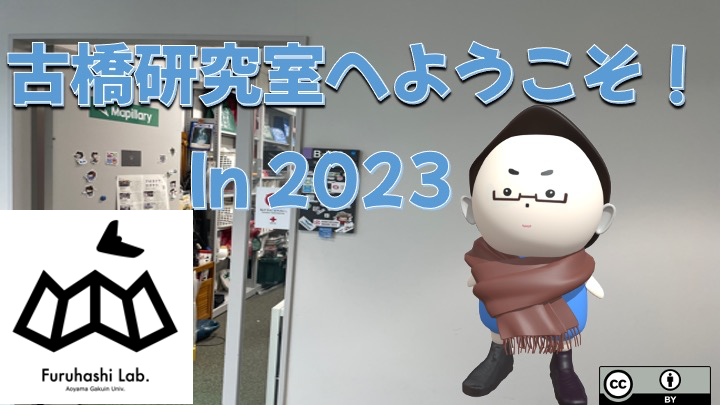
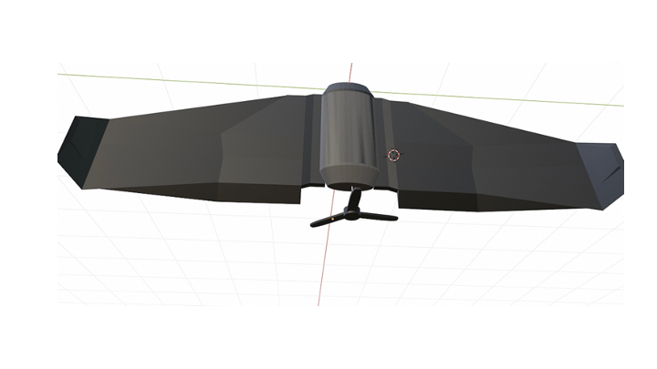

About Me
I am a student attending Aoyama Gakuin University and am a member of the Furuhashi Laboratory.
I am proficient in English, and beyond English-Japanese translation, I can also edit videos and create websites.
Videos
- Introduction movie of lab
- 3D modeling
- Creating charms
- English
I have created an introduction video for the Furuhashi Laboratory.
Watch on Youtube
Activities
I tried modeling a drone using 3D Blender.
Watch on Medium
I tried to make charms.
Watch on Medium
Certifications
I achieved a score of 885 on the TOEIC, which stands for Test of English for International Communication.
It's an internationally recognized test that assesses an individual's proficiency in English in a business context.